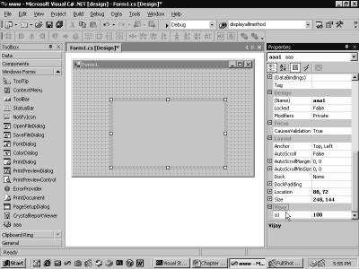
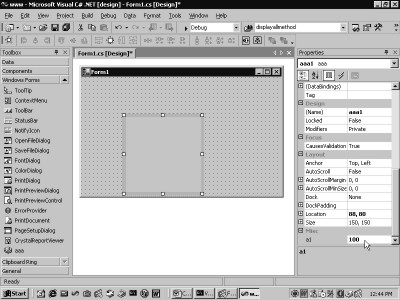
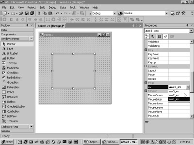

1.
Controls -
Attributes, Properties and Events
Scores of programmers make a living
by writing Controls, and then they allow others to toil on their creations. For
instance, the controls exposed to the view in the Toolbox window are designed
by the Microsoft programmers. These controls are then utilized to build complex
applications.
The world of Visual Studio.Net
caters to two primary sets of people; one that uses controls from the toolbox,
and the other, that consists of persons who are significantly more brilliant
and who pen down controls on their own.
Controls shield the user from
the complexity of the underlying software infrastructure.
The first chapter in this book
titled Visual Studio.Net - Controls and Add-ins expounds how a user-defined
control can be displayed in the toolbox of Visual Studio.Net, together with its
attributes, properties and events.
A word of caution: In order to
guard against the eventuality of the dll not re-loading into memory, it would
be prudent to restart Visual Studio.Net under the following circumstances:-
• with every new application.
• after incorporating any modifications.
• when you do not see an output similar to the one displayed in this book.
So, follow our dictum, i.e. if
you fail to spot the same screen as shown in this book, restart Visual
Studio.Net.
We set off by creating a new project
in Visual Studio.Net. To achieve this, click on the File menu option, then on
the New menu option followed by the Project menu option. Choose the second
option of Visual C# Projects in the dialog box and from the second pane, select
the option of Windows Application. Resultantly, an executable file is
generated.
This project is titled as www
and is placed in the folder v2. Henceforth, all files related to this project
shall be created in the folder c:\v2\www. Once the OK button has been clicked
upon, ensure that the properties window and the toolbox are in sight.
|
Screen 1.1 |
Alternatively, simply click on the
View menu option, and then, select the Properties option for the Properties
window. Similarly, select the option of View-Toolbox for the Toolbox.
Thereafter, click on any one of
the controls in the toolbox, and then, click the right mouse button. The menu
that springs forth, exhibits the possible actions that can be carried out with
the control. The screen 1.1 displays these menu options.
From amongst the various
choices, we have opted for the Customize Toolbox option. This leads to the
display of a dialog box, as observed in screen 1.2.
|
Screen 1.2 |
This screen reveals the fact that
there are two types of controls, viz. the COM Components that belonged to the
world of OLE, and the .Net Components, which have been introduced by the .Net
world. Select the tab of .Net Framework Components. After a significant pause,
a new dialog box shows up on the screen.
|
Screen 1.3 |
The dialog box embodies a list
of controls, wherein a few of them have
a tick mark placed in front of them. The controls with a tick mark in
their check boxes are visible in the toolbox.
The very intent of this chapter
is to initiate one of our controls into the toolbox. This implies that the
control should be visible in the dialog box and should have a tick mark
associated with it. To achieve this, we open a
new DOS box. Then, in the root directory, we create a folder named a1.
Thereafter, the following program named a.cs is entered in the folder c:\a1.
a.cs
using System.Windows.Forms;
public class aaa : UserControl
{
}
To compile the above program
into a library or a dll, the following command is employed:
C:\a1>csc /t:library a.cs
Consequent to this, a file named
a.dll is created.
Click on the browse button in
the dialog box, which appears with the Customize Toolbox option.
|
Screen 1.4 |
Ensure that the folder a1 is open,
as depicted in the screen 1.4. Then, double click on the file a.dll or select
the file and click on the Open button. The Open dialog box indubitably affirms
that only the exe or the dll file can be selected.
On selecting the file, the
dialog box gets updated, wherein the first member of the list box displays the
name aaa, which is the same as the name of the class in the dll. Moreover, the
name of the assembly transforms into 'a', which is the name of the dll.
The control is selected by
clicking on the check box, as depicted in screen 1.5. Then, the OK button is
clicked.
|
Screen 1.5 |
Nothing earth shattering occurs on
the screen. However, on scrolling down the toolbox, a control called aaa, which
has been added to the toolbox, meets the eye. This is shown in screen 1.6.
|
Screen 1.6 |
Now, select it like any other
control and drag and drop it into the form, as shown in screen 1.7.
|
Screen 1.7 |
The control gets inducted into
the form. In the properties window, a zillion properties get displayed along
with it. The name of the control in the properties window is aaa1, while the name
of the class is aaa. If we press the F5 key on the keyboard to run the program,
a blank screen gets displayed, as shown in Screen 1.8.
|
|
|
Screen 1.8 |

The program a.cs is responsible
for the creation of the control, which purports itself like any other control
in the toolbox. The program begins by creating a class aaa that is derived from
UserControl. This class belongs to the namespace System.Windows.Forms.
This class boasts of a very
distinguished pedigree. It is derived from ContainerControl, which in turn is
derived from ScrollableControl , Control, Component, MarshalByRefObject, and from
Object, like all other classes. The Control class is one of the largest classes
in terms of properties, methods and events.
The UserControl class is the
base class for creating user-controls. Thus, it can be safely assumed that all
controls visible in the ToolBox have been derived from UserControl. If a
control has not been derived from UserControl, it will not appear in the dialog
box. Thus, the first rule whilst creating a user-defined control is that, it
must derive from UserControl.
We shall now examine the code
generated by Visual Studio.Net for instantiating our control. The View Code
options display the following:
|
|
|
Screen 1.9 |
private aaa aaa1;
A public object aaa1 of control
type aaa is created. The actual instance of the aaa1 object is created in the
function InitializeComponent.
this.aaa1 = new aaa();
this.aaa1.Location = new System.Drawing.Point(80, 64);
this.aaa1.Name = "aaa1";
this.aaa1.TabIndex = 0;
Three properties of the control,
viz. Location, Name and TabIndex are initialized to their respective values. A
salient point to be noted here is that none of these three properties exists in
the class aaa. They dwell in the derived class, i.e. UserControl, and hence,
they obviously originate from there.
The Location property is a
read/write property of type Point. It decides the position at which the control
will appear on the container. It contains the coordinates of the upper left
corner of the control with respect to the left corner of the window or
container. The Location property determines the position where the control
would be placed in the window.
The Name property assigns a name
to the control. Thereafter, the control can be referenced by this name. The
TabIndex property decides as to which control shall bask in all the attention
each time that the tab key is pressed.
this.Controls.AddRange(new System.Windows.Forms.Control[] {this.aaa1});
Finally, the control is added to
the Controls Collection using the AddRange function.
On unselecting the control by
removing the tick mark from the check box, the control flees from the toolbox.
This action is applicable to any control whose check box has initially been
selected. Now, we progress on to displaying some text in the control.
a.cs
using System.Windows.Forms;
using System.Drawing;
public class aaa : UserControl
{
protected override void OnPaint(PaintEventArgs e)
{
Graphics g = e.Graphics;
Brush b = new SolidBrush(ForeColor);
g.DrawString("Vijay1", Font , b , ClientRectangle);
}
}
Compile this program like
before, and then press F5 to run the program. The output that is generated is
shown in screen 1.10, which displays Vijay1 as the content of the control.
|
|
|
Screen 1.10 |
Let us now try to fathom how
this could have transpired.
The class UserControl, or the
class that it is derived from, has a function called OnPaint, which gets
invoked each time the control has to display or render something in its window.
To override this function, we induct a function by the same name i.e. OnPaint.
However, it contains the keyword 'override'. In the absence of this keyword,
the newly introduced OnPaint function would be treated as a new OnPaint
function, and thus, would never be called.
There is no specific or
predetermined time for the function OnPaint to be called. We are merely aware
of the fact that whenever Windows, in its exalted opinion, decides to
invalidate the control's window, it calls the OnPaint function.
To achieve the objective of
redrawing the window, the OnPaint function is furnished with a parameter e, of
data type PaintEventArgs. This class has innumerable functions. Its most
worthwhile property is Graphics, which is of type Graphics. We have made things
uncomplicated and clear-cut by assigning the same name to the property and to
its data type.
The DrawString function is
called from the Graphics class and supplied with four parameters. The function
writes the string at specific coordinates in the controls window.
• The first parameter passed to this function is the Text that is to be written, viz. Vijay1.
• The second parameter is the Font to be used to display the string.
• The third parameter is the Brush to be employed to write the text.
• The last parameter is the Position of the rectangle at which the text is to be written.
Font and ClientRectangle are
properties of the UserControl class. The Font property represents a Font and
the ClientRectangle property determines the size of the window. This is
precisely the manner in which Vijay1 gets displayed in the control.
Now, let us render more complexity
to this control, by making it carry another control.
a.cs
using System.Windows.Forms;
using System.Drawing;
using System;
public class aaa : UserControl
{
Button b;
public aaa()
{
b = new Button();
b.Location = new Point(24, 56);
b.Text = "vijay";
b.Click += new EventHandler(abc);
Controls.AddRange(new Control[] {b});
}
void abc(object sender, System.EventArgs e)
{
MessageBox.Show("Hi");
}
}
Run the above application by
using the F5 key. A button with the text 'vijay' will emerge in the output window.
This is seen in screen 1.11. Now, click on the button. You would encounter a
message box with the greeting 'hi'. The screen 1.12 displays this box.
|
|
|
|
Screen 1.11 |
Screen 1.12 |

This substantiates the fact that
the control now has a button with an event attached to it. This is why it
displays the message box.
The above has been achieved by
creating an object b of type Button. As before, the object b is instantiated to
an instance of the button class. Then, the Location property is assigned the
coordinates of the position at which the button is to appear in the controls
window. The Location property is of type Point where the x and y co-ordinates
are specified as pixels and passed to the constructor.
The Text property is the text
that would be displayed as the caption of the button. Finally, the Click event
is wired to the function abc using the delegate EventHandler. Thus, each time
we click on the button, the function abc gets called and the message box
appears. Therefore, the purpose of the above exercise is to demonstrate the
fact that the user-defined control can contain other controls too.
Now, let us proceed further and
build a simple control that retrieves data from a database. This is achieved by
using a DataGrid control.
a.cs
using System.Windows.Forms;
using System.Drawing;
using System;
using System.IO;
using System.ComponentModel;
using System.Data;
using System.Data.SqlClient;
public class aaa : UserControl
{
Button b;
TextBox t;
DataGrid d;
DataSet c;
public aaa()
{
t = new TextBox();
t.Location = new Point(1, 0);
t.Text = "Customers";
b = new Button();
b.Location = new Point(1, 25);
b.Text = "vijay1";
b.Click += new EventHandler(abc);
d = new DataGrid();
d.Location = new Point(1,50);
d.Size = new Size(150, 136);
Controls.AddRange(new Control[] { t,b,d });
}
void abc(object sender, System.EventArgs e)
{
SqlConnection con = new
SqlConnection("server=(local)\\NetSDK;database=northwind; Trusted_Connection=yes");
SqlDataAdapter Cust = new SqlDataAdapter ("Select * from " + t.Text, con);
c = new DataSet();
d.DataSource = c;
Cust.Fill(c, "zzz");
d.DataMember = "zzz";
}
}
The above example exhibits the
productivity and utility of controls. On compiling the code into a dll, and
then, on running the program, the screen that gets displayed is discernible in
screen 1.13.
|
|
|
Screen 1.13 |
An empty DataGrid along with a
button and a textbox are visible. The textbox contains the text 'Customers'
written in it. Augment the size of the form to accommodate all the three
controls.
A click on the button fills up
the data grid with records from the
Customers table, which can be witnessed in the screen 1.14.
|
|
|
|
Screen 1.14 |
Screen 1.15 |
Now, in the textbox, change
Customers to Orders, and then, click on the button again. This results in the
display of records from the Orders table within the data grid. The screen 1.15
amply corroborates this fact.
Thus, by merely entering the
table name in the textbox and by clicking on the button, all the data from that
table can be retrieved into the data grid. The user can be kept insulated from
the nitty-grittie involved in handling databases, data grids, etc. This
presents a grand business opportunity to be seized!
Let us now understand how the
above control was written.
The TextBox object t, created
for the textbox, is instantiated in the constructor. Then, the Location
property is set to position it on the form. Thereafter, the Size property is
set to a Size object by passing the width and the height in pixels to the
constructor. The Text property, which is used to display content in the
textbox, is assigned the word 'Customers'.
Finally, the textbox is added in
a manner akin to that employed to add the Button. We choose to use the AddRange
function over Add, since the Add function comes handy only when a single
control has to be added at one time. Contrastingly, the AddRange function
proves worthwhile when multiple controls have to be added simultaneously.
In the case of the data grid, a
DataGrid object is instantiated and its Location and Size are set accordingly.
This control is also added to the Controls Collection.
Since three controls have been
affixed to the controls collection, we witness a total of three controls in the
form window, viz. a button, a textbox
with 'Customers' written in it, and an empty DataGrid.
A mouse click on the button invokes
the function abc. In this function, an SqlConnection object named con is
created. This object represents a connection to a database. During
instantiation, the constructor is passed a string that determines the server
and the database with which the program is to communicate on that server.
In this program, the database
location specified with the Server variable is NetSDK, which is the one
installed by the .NET framework. This installed database does not require a
user name and password, since the connection is marked as 'Trusted'. The
database variable is assigned the value of Northwind.
In SQLServer, a database stores
tables. The Northwind database contains tables such as Customers and Orders,
which get created and installed during the installation of the .NET framework.
The next object that is created
is of type SqlDataAdapter. It is this object that understands or works with the
SQL statement. A Select statement in SQL is used to retrieve data from the
database. The SQL statement assigned as the parameter in the constructor,
obtains the table name from the Text property of the TextBox t.
The Fill function in the
SqlAdapter class takes two parameters, i.e. a DataSet and the name of the table
that would eventually contain this data. Therefore, a DataSet Object c is
created and the table name is specified as zzz.
A DataSet object is constituted
of multiple DataTable objects. It is a container of data. The DataSource
property in the DataGrid is initialized to the DataSet object c. Thus, the data
displayed in the data grid will come from this DataSet. However, since a
DataSet object embodies multiple tables, the DataMember property is then set to
the table name zzz in the DataSet, so as to display the records.
It is not imperative for the
user of this control to comprehend the above explanations, since the primary
aim here is to enter the table name and to view the records present therein.
What transpires behind the scenes is of no consequence to the user. This is how
we insulate the underlying complexity of the controls from the user.
Properties
a.cs
using System.Windows.Forms;
using System.Drawing;
using System;
using System.IO;
using System.ComponentModel;
using System.Data;
using System.Data.SqlClient;
public class aaa : UserControl
{
int b1;
public int a1
{
get
{
abc("a1 get " + b1);
return b1;
}
set
{
b1 = value;
abc("a1 set " + b1);
}
}
public aaa()
{
abc("Constructor");
b1 = 100;
}
public void abc(string s)
{
FileStream fs = new FileStream("c:\\a1\\a.txt", FileMode.Append, FileAccess.Write);
StreamWriter w = new StreamWriter(fs);
w.WriteLine(s);
w.Flush();
w.Close();
}
}
a.txt
Constructor
a1 get 100
a1 set 100
Constructor
a1 get 100
a1 set 100
a1 get 100
a1 get 100
a1 set 200
a1 get 200
Just as falling in love is the
most splendid thing that can happen to anyone in this world, the introduction
of the concept of properties is one of the most laudable milestones in the
world of computers.
The above example introduces a
whole set of namespaces. Furthermore, the property a1 has also been created.
This property is of type int and uses the variable b1 to store its state.
In the get accessor, the value
stored in the variable b1 is returned, while in the set accessor, the value
contained in the special variable value
is assigned to the instance variable b1.
Prior to this, the variable b1
is assigned a value of 100 in the constructor.
Now, in order to ascertain when
the property a1 gets called, a function abc that accepts a string as a parameter,
is pressed into action. In this function, a FileStream object fs is created,
where the constructor is assigned three parameters as follows:-
• The first is the name of the file that is to be worked with.
• The second parameter is an enum, which specifies if any additions are to be effected at the end of the file.
• The third parameter specifies the operation to be performed on the file, i.e. the Write operation.
The stumbling block at this
instant is that the FileStream object cannot be used directly. All operations
have to be performed using a StreamWriter object, which eventually writes to
this file. The object is provided with the FileStream object in its
constructor.
Finally, the WriteLine function
is used to write the string passed to the file. The Flush function ensures that
the string gets written to the disk.
At this stage, you may have to
restart Visual Studio.Net to ensure that a fresh copy of the dll gets loaded
into memory.
In the application, the control gets
displayed in the form. Simultaneously, 3 lines are entered in the file a.txt.
The constructor gets called once. Thereafter, the get accessor is called.
The get accessor is called
whenever the system wants to display the value of a property, while the set
accessor is summoned whenever the value of a property changes.
A property in Visual Studio.Net
is akin to a variable. It contains a value that can be changed, but unlike a
variable, actual code gets executed. On scrolling to the very end of the properties
window, we encounter a heading or a category called Misc, which contains the
property a1 with a value of 100, as seen in screen 1.16.
|
|
|
|
Screen 1.16 |
Screen 1.17 |
The file a.txt shows the get
accessor being called twice.
The documentation renders a
clarification as to why an accessor gets called. However, nowhere does it
furnish a count of the number of occurrences of these accessors. Hence, it is
baseless to use a MessageBox, since these accessors get called too often.
The screen 1.17 is captured
during the process of changing the value of the property from 100 to 200.
In the file a.txt, we can yet
again observe a large number of 'gets' being called. The concept is that a set
accessor is called with the value 200, which is followed by copious number of
get accessors. A public variable is not deemed to be a property by the system.
a.cs
using System.Windows.Forms;
using System.Drawing;
using System;
using System.IO;
using System.ComponentModel;
using System.Data;
using System.Data.SqlClient;
public class aaa : UserControl
{
string b1;
Button b;
DataGrid d;
DataSet c;
public string a1
{
get
{
return b1;
}
set
{
b1 = value;
}
}
public aaa()
{
b = new Button();
b.Location = new Point(1, 0);
b.Text = "vijay1";
b.Click += new EventHandler(abc);
b1 = "Customers";
d = new DataGrid();
d.Location = new Point(100,0);
d.Size = new Size(150, 136);
Controls.AddRange(new Control[] { b,d });
}
void abc(object sender, System.EventArgs e)
{
SqlConnection con = new SqlConnection("server=(local)\\NetSDK;database=northwind;Trusted_Connection=yes");
SqlDataAdapter Cust = new SqlDataAdapter ("Select * from " + a1, con);
c = new DataSet();
d.DataSource = c;
Cust.Fill(c, "zzz");
d.DataMember = "zzz";
}
}
The property a1, which gets added
to the control, is now of type string, instead of int, as seen in the earlier
case. The properties window displays the value of the property as Customers, as
reflected in the screen 1.18.
|
|
|
Screen 1.18 |
The first point that is
corroborated here is that there is no difference whatsoever between a property
that has the data type of int and the one that has the data type of string.
A click on the button summons
the function abc. The code entered in this function remains unchanged, except
for the table name.
Earlier, the SQL Select
statement had received the table name from the text property of the textbox.
However, now it retrieves it from the property a1. But, from the user's point
of view, the data grid exhibits data from the Customers table, as shown in the
screen 1.19.
|
|
|
Screen 1.19 |
When the value of the property
is changed to Orders, the records will be displayed from the Orders table.
Thus, the user is offered two options; either to use a property or a textbox.
The data handling code remains unaltered in either of the cases.
a.cs
using System.Windows.Forms;
public enum bbb
{
aa ,bb , cc
}
public class aaa : UserControl
{
bbb b1;
public bbb a1
{
get
{
return b1;
}
set
{
b1 = value;
}
}
public aaa()
{
b1 = bbb.bb;
}
}
The same property a1 is now
modified, whereby the data type is an enum bbb. An enum, for those who tuned in
late, is merely a way of restricting the values that an object can have. The
data type of the variable b1 is bbb, which is used to store the value of the
property.
In the constructor, the variable
b1 is initialized to the value bb. Hence, in screen 1.20, the value of the
property is bb.
|
|
|
|
Screen 1.20 |
Screen 1.21 |
Since the value of the property
b1 is a list of finite values, a list box is displayed instead of a textbox.
The list box is clearly visible in the screen 1.21.
Three values are displayed,
since the enum can theoretically contain the values aa, bb and cc. This also
leads to the conclusion that when values for a property are to be selected from
a list box, the data type for that property should be an enum.
We shall reiterate at regular
intervals that Visual Studio.Net needs to be restarted because, during the
design phase, the modified copy of the dll is not picked up from the disk.
a.cs
using System.Drawing;
using System.Windows.Forms;
public class aaa : UserControl {
Color b1;
public Color a1
{
get
{
return b1;
}
set
{
b1 = value;
}
}
public aaa()
{
b1 = Color.Red;
}
}
|
|
|
Screen 1.22 |
In the above program, the
property a1 is of type Color. The Color class has myriads of static properties that
represent individual colors.
This makes the b1 variable also
of type Color. In the constructor, b1 is initialized to the static member Red.
Thus, when the control is placed in our form, the color Red is shown as the
selected color.
If you click on the down arrow,
you shall notice a custom color dialog box, as seen in the screen 1.23
|
|
|
Screen 1.23 |
Thus, depending upon the data
type of the property, the user interface applicable to the specific data type
is presented.
Therefore, Visual Studio.Net
selects the pertinent user interface when the value of a property is changed.
The user interface is contingent on the data type of the property.
a.cs
using System.Drawing;
using System.Windows.Forms;
public class aaa : UserControl
{
Image b1;
public Image a1
{
get
{
return b1;
}
set
{
b1 = value;
}
}
}
The property a1 is now assigned
a data type of Image. The Image data type shows three dots, as seen in screen
1.24. By clicking on them, a File Open dialog box with a list of images emerges
on the screen, as can be viewed in screen 1.25.
|
|
|
|
Screen 1.24 |
Screen 1.25 |
Any image file can be opted for
and the Open button can be clicked upon. Doing so would display a thumb nail of
the image, as is witnessed in screen 1.26.
|
|
|
|
Screen 1.26 |
Screen 1.27 |
Moreover, when the plus sign is
clicked on (as is apparent in screen 1.27), a list of sub-properties, which
constitute the Image property, gets displayed. Thus, Visual Studio.Net does in
Rome what the Romans do!
a.cs
using System.Drawing;
using System.Windows.Forms;
public class aaa : UserControl
{
Cursor b1;
public Cursor a1
{
get
{
return b1;
}
set
{
b1 = value;
}
}
}
The data type of the property is
now changed to a Cursor. This effectuates into the display of a list of
cursors, as seen in screen 1.28. These are the predefined cursors that may be
employed.
|
|
|
|
Screen 1.28 |
Screen 1.29 |
a.cs
bool b1;
public bool a1
The data type of bool is
attached to the property. This leads to the display of only two values in the
list box, viz. true and false, as shown in screen 1.29.
Before we progress any further
and create our own complex properties, let us attend to certain other important
concepts that necessitate immediate attention.
Attributes
An attribute is merely a class
derived from Attribute. Attributes offer a more fine-grained control over the
properties.
a.cs
using System.ComponentModel;
using System.Windows.Forms;
public class aaa : UserControl
{
[Category("Vijay")]
public int a1
{
get
{
return 100;
}
set
{
}
}
}
The screen 1.30 depicts a new
category, which has 'Vijay' affixed to the properties window.
|
 |
|
Screen 1.30 |
Since there is no predefined
category named 'Vijay', a new one gets added.
The Category attribute
determines the category in which the property resides. However, since no
category has been specified, the default of Misc is utilized.
[Category("Design")]
In the above case, the property
is placed in a category called Design. The screen 1.31 establishes the presence
of the property a1 within the Design category.
|
|
|
Screen 1.31 |

Thus, a property can be placed
in a category of our choice. If the category does not exist, a new category
gets created.
The category attribute is used
to organize the properties into groups that share a common behavior. There are
no restrictions whatsoever on the name that can be assigned to a category.
Contrastingly, if the second
bitmap in the properties window is clicked on, the properties get listed
alphabetically, as seen in screen 1.32. This option completely repudiates the
Category attribute.
|
|
|
|
Screen 1.32 |
Screen 1.33 |

The next bitmap only displays
the properties, as seen in screen 1.33. While studying the attribute concept,
ensure that the first option is selected, wherein the properties are grouped
into various categories.
a.cs
[Category("Design")]
[Description("Vijay Mukhi")]
public int a1
|
|
|
Screen 1.34 |
The attribute Description
introduced in the code permits us to specify some help or description about a property.
Thus, when the property is clicked upon in the property window, its description
pops up in the window pane below. For the property a1, we notice the words
'Vijay Mukhi' mentioned below the name a1, as is evident in screen 1.34. You
may have to augment the size of the window to see the description in its
entirety.
a.cs
[Browsable(false)]
public int a1
The next attribute that we shall
analyze is Browsable, which has been set to a value of false. The effect of
assigning this value to the attribute is that, the property is no longer
visible in the properties window. Check out screen 1.35 to validate this.
|
|
|
Screen 1.35 |
Thus, effectively the user is
not entitled to browse this property.
a.cs
using System.ComponentModel;
using System.Windows.Forms;
[DefaultProperty("a1")]
public class aaa : UserControl
{
[Category("Design")]
public int a1
{
get
{
return 100;
}
set
{
}
}
}
The next attribute is the DefaultProperty. This attribute must be placed on a class and not on a property. This attribute identifies a property that shall be the default property whenever a control is selected. Thus, when our control is selected (as is apparent in screen 1.36), the property a1 is depicted as selected.
|
|
|
Screen 1.36 |

a.cs
[DesignerSerializationVisibility(DesignerSerializationVisibility.Visible)]
public int a1
|
 |
|
Screen 1.37 |
The attribute of
DesignerSerializationVisibility on the property is provided with an enum
DesignerSerializationVisibility value of Visible. This attribute determines how
the property a1 shall be represented in the code.
Now, when we change the value
from 100 to 200 and press enter, the value reverts back to its original value
of 100. This occurs because the new value assigned to the property has not been
saved. The code generated in the background has the following line:
this.aaa1.a1 = 100;
Thus, the value of the property
a1 has been serialized or saved as part of the code. However, on occasions
galore, we may not want this serialization to be entered in the C# code that is
generated. The option available is to use the enum Hidden in the following
manner:
a.cs
[DesignerSerializationVisibility(DesignerSerializationVisibility.Hidden)]
public int a1
On changing the value to Hidden,
there is no trace of the property a1 anywhere in the code that is generated.
Thus, there is no way of determining the previous value of the property a1,
since it has not been saved or serialized.
Before we move on to more
intricate issues of attributes, we shall analyze the attributes that come into
play when a project in Visual Studio.Net creates a control.
The mechanics are as follows:
Click on the menu options File, New, Project, in this sequence.
|
|
|
Screen 1.38 |
From the first pane, choose the option
of Visual C# projects, and from the second pane, select Windows Control
Library. The project is assigned the name ccc and is positioned in the folder
v3, as seen in screen 1.38. The screen that emerges is obvious in the screen
1.39. This screen has an uncanny likeness to a Windows application, with the
exception of its form, which is of a significantly smaller size.
|
|
|
Screen 1.39 |
The next step is to
drag-and-drop a button from the toolbox on to the form, which has been attained
in screen 1.40.
|
|
|
Screen 1.40 |
Once these steps have been
executed, click on the menu Build, and then, on the Build option to build the
control. Save the entire project and close it.
Now, open up the earlier C#
application and delete the control aaa from the toolbox. Thereafter, conforming
to the laws of inserting a control, click the right mouse button on the
toolbox, choose Customize Toolbox, and then select the .Net framework tab.
On browsing the folder
c:\v3\ccc\bin\debug, the file ccc.dll shall appear. It is to be selected and
opened. This launches the control UserControl1 into the dialog box. Ensure that
the checkbox has been selected, so as to make it noticeable in the toolbox.
Finally, click on OK.
The toolbox now accommodates
this control, but it becomes apparent only when we scroll down to the very end,
as shown in screen 1.41.
|
|
|
|
Screen 1.41 |
Screen 1.42 |

Now, drag-and-drop the control
into our form, as seen in the screen 1.42.
Build and run the application. A
window with a single button materializes on the terminal. Thus, we have been
able to create a control with a button, without writing a single line of code.
Now, to establish what Visual
Studio.Net has brought along to the party, let us revert back to the control
project and have a look at the code generated.
a.cs
using System;
using System.Collections;
using System.ComponentModel;
using System.Drawing;
using System.Data;
using System.Windows.Forms;
namespace ccc
{
/// <summary>
/// Summary description for UserControl1.
/// </summary>
public class UserControl1 : System.Windows.Forms.UserControl
{
private System.Windows.Forms.Button button1;
/// <summary>
/// Required designer variable.
/// </summary>
private System.ComponentModel.Container components = null;
public UserControl1()
{
// This call is required by the Windows.Forms Form Designer.
InitializeComponent();
// TODO: Add any initialization after the InitForm call
}
/// <summary>
/// Clean up any resources being used.
/// </summary>
protected override void Dispose( bool disposing )
{
if( disposing )
{
if( components != null )
components.Dispose();
}
base.Dispose( disposing );
}
#region Component Designer generated code
/// <summary>
/// Required method for Designer support - do not modify
/// the contents of this method with the code editor.
/// </summary>
private void InitializeComponent()
{
this.button1 = new System.Windows.Forms.Button();
this.SuspendLayout();
//
// button1
//
this.button1.Location = new System.Drawing.Point(48, 112);
this.button1.Name = "button1";
this.button1.TabIndex = 0;
this.button1.Text = "button1";
//
// UserControl1
//
this.Controls.AddRange(new System.Windows.Forms.Control[] { this.button1});
this.Name = "UserControl1";
this.Load += new System.EventHandler(this.UserControl1_Load);
this.ResumeLayout(false);
}
#endregion
private void UserControl1_Load(object sender, System.EventArgs e)
{
}
}
}
If you examine the code
generated by Visual Studio.Net, you would notice that it starts with the usual gang
of suspects, i.e. the Using statements. In all, there are six Using statements.
The name of our project is ccc. Hence, all the code is placed in the namespace
ccc. The dll is also named as ccc.dll.
Then, we encounter a class
called UserControl1, which is derived from the class UserControl. This class
name may be modified. However, the constructor name must also be
correspondingly changed in such a case. The function InitializeComponent is
called in the constructor.
In the InitializeComponent
function, at first, a new instance of the Button class is created. It is stored
in the instance variable button1. Then, the Location property is set to the
position where the button is to be placed in the form. The Text property is set
to a default value of button1, which is also the name of the button. The button
is then added to the controls collection.
The region directive can either
expand or contract code. Correspondingly, either the code for the entire
function will be visible or merely the name of the function will be seen.
The SuspendLayout function can
be eliminated. It simply casts a hint to the framework not to render the form.
This is because the process of placing controls in the from has not yet been
undertaken. The last function called Dispose gets called whenever the control
is disposed or erased from memory. It is worthless to us at this stage.
The remarkable point here is
that, other than the Location property of the button, Visual Studio.Net offers
nothing fresh while generating code for the controls. The very aim of inserting
this property is to avoid the time wastage involved in aligning controls for
orderliness.
Thus, it would be a sagacious
move to write the code for our controls in a word processor, then compile it
and call it from the toolbox, since it enhances our understanding of the entire
process. Thus, we would be adopting the manual approach henceforth.
Event Handling in Controls
To grasp the basics of an event
with respect to a Windows Forms, we shall review a simple example. Most of you
are wise and erudite, and therefore may be aware of this approach, but we still
implore you to stay with us.
Create a new project by clicking
on the menu options File, New, Project. As is customary, choose the second
option of Visual C# Projects from the first pane and Windows Application from
the second pane.
Name the project as w4 and the
folder as v2. Then, drag and drop a button onto the form, as was done before.
The properties window shall display a list of properties for the button. There
is an icon of a lightning bolt in the properties window. Click on this icon and
you shall spot a list of events, as in screen 1.43.
|
|
|
|
Screen 1.43 |
Screen 1.44 |
The event that appears first is
the Click event. When it is selected in the list box, nothing meets the eye
initially.
Now, double click on the Click
event in the properties toolbox. This would transport you straight to the code
generator, with the following lines of code added:
this.button1.Click += new System.EventHandler(this.button1_Click);
private void button1_Click(object sender, System.EventArgs e)
{
}
Before we explicate the code, we
shall run a quick eye over the Click event in the properties toolbox. We can
see button1_Click in the list box. Additionally, there is some extra code generated
in the InitializeComponent function. The button has a Click event that has been
connected to or added to the function button1_Click by the delegate
EventHandler.
As an outcome, the Click event
of the button would call this function. However, the snag here is that, it is
only the button that has the knowledge of when the Click event should be fired.
By using a delegate, we have registered a function with the Click event. Thus,
the code in the function gets executed when the event is triggered by the button.
Apart from the introduction of
extra statements in the code, insert the following lines. The function abc has
been associated with the Click event. Now, the Click event calls two functions
and both these functions merely display a Message Box.
this.button1.Click += new System.EventHandler(this.button1_Click);
button1.Click += new System.EventHandler(abc);
private void button1_Click(object sender, System.EventArgs e)
{
MessageBox.Show("1");
}
private void abc(object sender, System.EventArgs e)
{
MessageBox.Show("2");
}
When the program runs and the
button is clicked, the Click event gets fired, thereby invoking all the
functions associated with it. The functions are called in the same sequence in
which they have been registered. Thus, the resultant output is that first a
Message Box displaying the number 1 is spotted, and then a Message Box
exhibiting the number 2 is displayed.
|
|
|
|
Screen 1.45 |
Screen 1.46 |
We wish to accentuate the fact
that the button is totally oblivious to the exact number of functions that are
being called. This is because the functions are placed in the code area and not
within the buttons. Thus, the event concept spans two ideas.
The control triggers the event
by using its own sets of rules and only those functions that are registered with
the event get called. The listbox in the Click event shows the two functions
that are attached to the Click event, as seen in screen 1.46.
Just to drive home the concept
of events, scroll down the properties window until you come to an event called
Mouse_Enter. Double click on this event. This will lead to the insertion of the
following code in the code painter:-
button1.MouseEnter += new System.EventHandler(this.button1_MouseEnter);
private void button1_MouseEnter(object sender, System.EventArgs e)
{
MessageBox.Show("3");
}
The InitializeComponent function
has the event MouseEnter associated with the function button1_MouseEnter, which
would get called each time this event gets triggered off.
For this reason, as soon as the
mouse cursor attempt to enter the button while the program is running, a
message box blocks the way. This is because the event MouseEnter gets triggered
each time the mouse enters the button.
|
|
|
Screen 1.47 |
We now proceed further to create
our own event.
a.cs
using System.Windows.Forms;
using System;
public class aaa : UserControl
{
public event EventHandler ev
{
add
{
}
remove
{
}
}
}
As always, let us start anew.
So, create a new project in the same manner as before and name it as w5. Place the
control aaa in the form. Then, click on the lightning bolt icon for events in
the properties window. On scrolling further down, you would notice that the
event called ev gets added to the list of events under the Misc section, as is
evident in screen 1.48. It is as simple as this!
|
|
|
Screen 1.48 |
An event in a control starts
with the public modifier, followed by the reserved word event. This is followed
by the type or the delegate that is to be associated with the event. The
delegate type determines the parameters to the function that gets created in
the code painter.
Since each property has a get
and a set accessor, the events have corresponding add and remove accessors,
both of which are mandatory. The event is assigned the name of ev. Double clicking on the event ev displays the
code painter with the following lines of code:-
this.aaa1.ev += new System.EventHandler(this.aaa1_ev);
private void aaa1_ev(object sender, System.EventArgs e)
{
}
All events follow the laid down
rules. Since the name of the event is ev, the function that gets called is
assigned the name of aaa1_ev, which is formed by a combination of the name of
the control aaa1 and the name of the event ev.
Now, to trigger this event ev so
that the function aaa1_ev gets executed, let us revert back to the control.
a.cs
using System.Windows.Forms;
using System;
public class aaa : UserControl
{
public event EventHandler ev
{
add
{
}
remove
{
}
}
protected override void OnMouseDown(MouseEventArgs e)
{
MessageBox.Show("Mouse Down");
}
}
The OnPaint function is
triggered off by the Paint event and the OnMouseDown function is triggered by
the MouseDown event. The outcome of the above code is that, when we click
inside the window, a MessageBox shall emerge, as seen in the screen 1.49.
|
|
|
Screen 1.49 |
We employ this function to
trigger off the event ev, which would eventually call all the functions that
have been registered with it.
a.cs
using System.Windows.Forms;
using System;
public class aaa : UserControl {
EventHandler e;
public event EventHandler ev
{
add
{
MessageBox.Show("Add");
e += value;
}
remove
{
MessageBox.Show("Remove");
e -= value;
}
}
protected override void OnMouseDown(MouseEventArgs ee)
{
MessageBox.Show("Mouse Down");
e.Invoke(this, null);
}
}
Now, a single line of code is
added to the control for both the 'add' and 'remove' accessors. The property
accessors receive a free variable called value, which actually becomes a
parameter to the function that the property gets converted to. The event also
gets the same value object. However, it represents the name of the function to
be executed.
The delegate e of type
EventHandler stores or adds this value member to the delegate e. In the remove
accessor, the reverse approach is adopted, wherein, the value is subtracted
from the existing one. A message box is displayed each time the accessor gets
called.
In the OnMouseDown function, the
Invoke function is called with two parameters. The first one represents the
'this', which is the current object or the entity calling or firing the event.
The second parameter is an EventArgs entity. These two parameters are
essential, since the delegate is of type EventHandler.
this.aaa1.ev += new System.EventHandler(this.aaa1_ev);
this.aaa1.ev += new System.EventHandler(this.aaa2_ev);
this.aaa1.ev += new System.EventHandler(this.aaa3_ev);
this.aaa1.ev -= new System.EventHandler(this.aaa1_ev);
private void aaa3_ev(object sender, System.EventArgs e)
{
MessageBox.Show("3");
}
private void aaa2_ev(object sender, System.EventArgs e)
{
MessageBox.Show("2");
}
private void aaa1_ev(object sender, System.EventArgs e)
{
MessageBox.Show("1");
}
|
|
|
Screen 1.50 |
When the above project is
executed, it displays the message box with Add thrice. Then, it shows the
MessageBox with Remove just once.
This occurs because the
constructor gets called before the window is displayed. This results in the Add accessor of the
event ev being called thrice due to the += syntax, and the Remove accessor
being called once. Clicking on the window displays the MessageBox with mouse
down, followed by the MessageBox having the values of 2 and 3.
Thus, to add the three functions
aaa1_ev, aaa2_ev and aaa3_ev, the EventHandler delegate is added to. Moreover,
to remove the first function aaa1_ev, the -= syntax is used.
The MouseDown event that gets
triggered in the control, triggers off the Invoke function from the delegate.
Each time the Add accessor gets called, it adds the value parameter that
represents each of the above functions. The -= activates the Remove accessor,
which eliminates the function from the event list.
The Invoke function invokes all
the functions associated with the event. You are not required to keep track of
them, since the onus of this lies with the event handling code of the
framework. You simply have to trigger off the event, and the rest shall be
taken care of.
|
 |
|
Screen 1.51 |
The event icon in the properties
window exhibits all the functions that are visible, as depicted in screen 1.51.
a.cs
using System.Windows.Forms;
using System;
public class aaa : UserControl {
EventHandler e;
public event EventHandler ev
{
add
{
MessageBox.Show("Add");
e += value;
}
remove
{
MessageBox.Show("Remove");
e -= value;
}
}
public int a1
{
get
{
return 1;
}
set
{
e.Invoke(this, null);
}
}
}
In the above control, the
function OnMouseDown is replaced by the property a1. The event ev is now called
in the 'set' accessor of the property a1.
In the project, add a button to
the form. Then, double click on the button and add the following code in the
Click event of the Button.
private void button1_Click(object sender, System.EventArgs e)
{
aaa1.a1 = 10;
}
private void aaa3_ev(object sender, System.EventArgs e)
{
MessageBox.Show("3");
MessageBox.Show(aaa1.a1.ToString());
}
private void aaa2_ev(object sender, System.EventArgs e)
{
MessageBox.Show("2");
}
private void aaa1_ev(object sender, System.EventArgs e)
{
MessageBox.Show("1");
}
Thereafter, run the project and
click on the button. The 'set' accessor of the property a1 gets called, which
in turn calls the event ev using the Invoke function. The Invoke function in
turn, calls the three functions that were attached to the event, thus
displaying three message boxes.
To summarize, the event has to
be triggered by the control. This can be accomplished by using a property. It
can also be achieved by triggering an event in one of the predefined events,
which the control responds to, or by firing it through any other method.